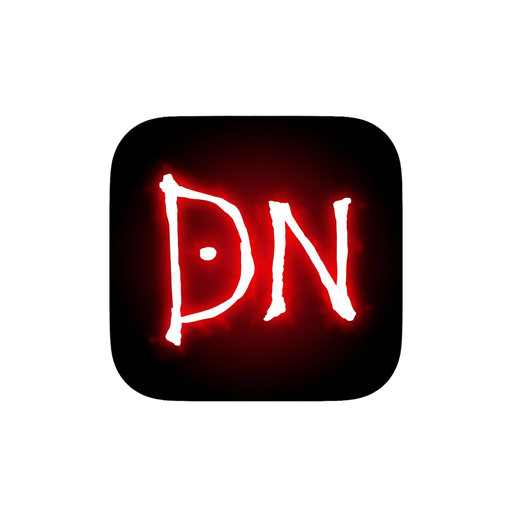

By Jhony Walker Studio
Lightweight • Fast • Free — VLC Alternative for Windows
📥 Download FreeOpens in 1 second, plays all formats
No extra menus, just one toolbar
Like VLC — Speed, Snapshot, Aspect Ratio
Drag & drop, shuffle, loop
No install needed version available
Sharqpur, Punjab — Support local dev
If you like DN Player, donate:
JazzCash: 03710721332
⭐ Star on GitHub 📥 Direct Download Page